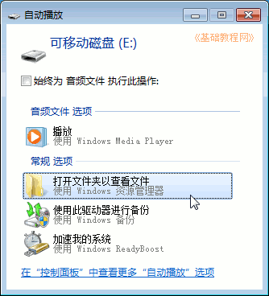
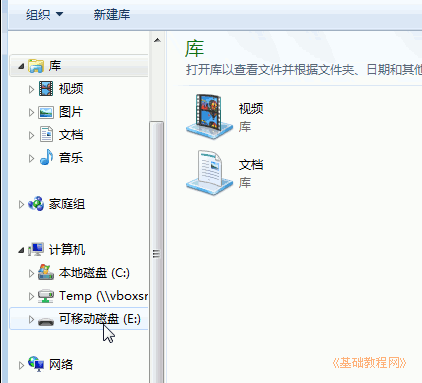
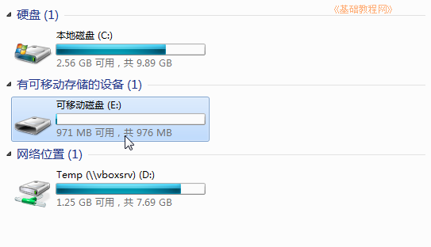
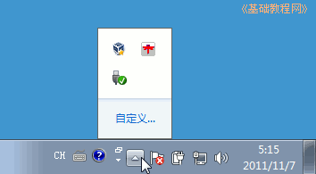
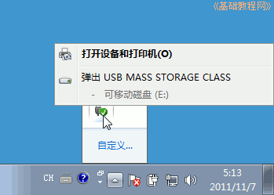
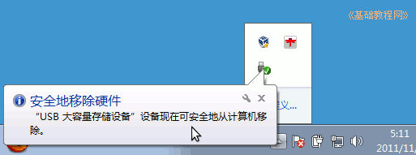

Windows7 基础入门教程
作者：TeliuTe 来源：基础教程网
十九、使用U盘/移动硬盘 返回目录 下一课接入 U 盘和移动硬盘后，会在托盘显示一个绿色的图标；
1、使用 U 盘
1）插入U盘等待托盘出现可以使用的图标，如果插头正着插不进去，就反过来试试，看清里面的缺口位置；
2）有时会出现一个自动播放的对话框，一般选择“打开文件夹”；

3）打开“库”文件夹，或者“计算机”，找到可移动磁盘，一般是最后一个磁盘；
 
4）拔出 U 盘前，要先弹出设备，点托盘里的折叠按钮，找到绿色的可移动磁盘；

5）瞄准图标点一下左键，弹出来一个列表菜单，找到“弹出 USB 设备”点击左键；

6）稍等会出来一个“安全地移除硬件”的提示，这时就可以拔出 U 盘了；

7）如果提示不能弹出，就把打开的 U 盘文件都关闭了再重复一次，还不行就先注销或关机然后再拔；
本节学习了使用U盘/移动硬盘的基础知识，如果你成功地完成了练习，请继续学习下一课内容；
本教程由86团学校TeliuTe制作|著作权所有
基础教程网：>http://teliute.org/
美丽的校园……
转载和引用本站内容，请保留作者和本站链接。